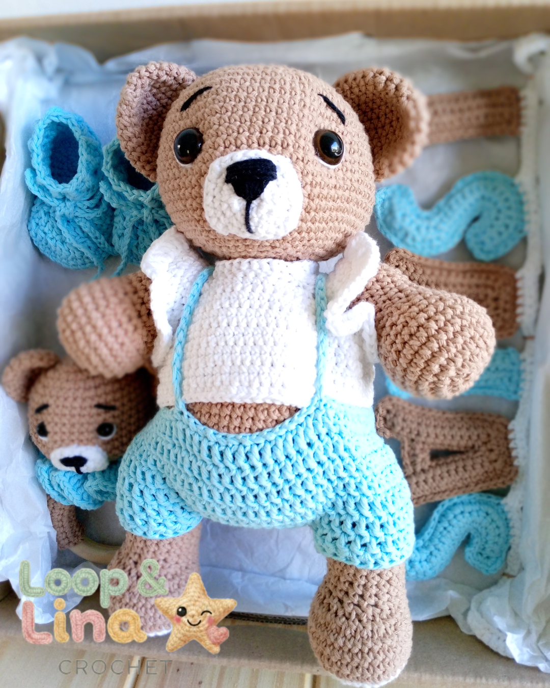

Creatividad en cada tejido
Creamos piezas unicas que combinan tecnicas tradicionales con ideas originales.
Loop and lina
Tejidos de crochet hechos a mano
Un espacio dedicado al mundo del crochet, donde cada tejido se realiza artesanalmente con creatividad, dedicación y amor por los detalles.

Creamos piezas unicas que combinan tecnicas tradicionales con ideas originales.